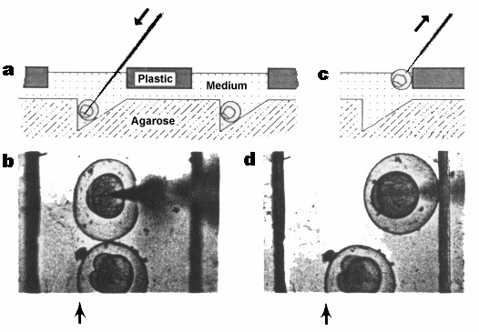

Most of the criteria used to pick a particular convention were designed to minimize confusion and maximize the utility of the nomenclature and the ease with which people outside (as well as those within) the field can follow the field.
We would like to propose these conventions to the zebrafish community. We believe it is very
important that the entire zebrafish community adopt one set of conventions. We can discuss
strong objections or additions through the Zebrafish Science Monitor, the Electronic Bulletin
Board, or informally by correspondence.
Naming genes identified by mutation
1. The name of a gene identified by mutation should refer to the ostensible phenotype of the mutant without any inherent interpretation of the phenotype. It should not be too specific. Determining the molecular mechanism by which a phenotype is produced can be a formidable task and should not be inferred by the name of the gene. The name should be a mnemonic for the mutant phenotype. For example, cyclops is an excellent name for the mutation isolated in Eugene (Hatta et al., 1991) which produces a cyclopic phenotype.
2. The name should be unique, one or two words, and italicized. Longer names tend to be impractical to use. Avoid choosing an identical name used in another species.
3. For mutations in different genes that all have similar phenotypes, a single name followed by
consecutive numbers should not be used. This nomenclature makes the field less accessible to
the outsider. A mutation in a second gene resulting in cyclopia could be called fused-eyes, but
should not be called cyclops2.
Naming cloned genes
1. For nonhomologous "novel" genes identified by cloning, the conventions above apply with the exception of the use of numbers. For a new gene family, it would be appropriate to name the individual genes in the family with a single family name followed by consecutive numbers. The numbers would immediately follow the name with no hyphen or space between them. No further letters would follow this number in the gene name. For example, abc1, abc2, abc3 are appropriate; however, abc1A, abc1B, and abc1C are inappropriate.
2. For homologous genes cloned (rather than those with just some equence similarity which are
probably not true homologues), the same name as in the counterpart organism should be given to
the zebrafish gene. This would make it easier to follow "homologue" work in different
organisms. The fish gene should not be preceded with "Z" or "Zf", otherwise there will be
thousands of zebrafish genes beginning with "Z". For example, a zebrafish homologue to the
mouse Wnt1 gene becomes the zebrafish wnt1 gene.
Abbreviated name
A gene identified either by mutation or molecular analysis should be abbreviated by three lower
case italicized letters or by three lower case letters and a number (no hyphen) italicized. All
letters should be roman, i.e. no Greek letters. The letters should be unique with respect to other
named zebrafish mutants/genes and should be letters derived from the full name. For example,
the abbreviated name for cyclops is cyc. Numbers should generally not be used in naming a gene
only identified by mutation. When a number is included in the name (see Naming cloned genes,
above), there should be no hyphen or space between the letters and the number.
Alleles
The allele-specific designation should be denoted by a superscript. Dominant mutations will be designated by "d" in the first position of the superscript. All allele names without a "d" then indicate a recessive allele. The next position of the superscript (this will be the first position if the mutation is recessive) will be a lower case letter that designates the laboratory in which the mutation was isolated. This laboratory letter is then followed by unique numbers and/or letter(s) for the particular allele which completes the allele designation. Because "d" will denote "dominant", "d" cannot be used for a laboratory designation. Each allele designation from a given laboratory would be unique. Because each laboratory has a different letter designation, all mutant alleles from all zebrafish laboratories would be unique and could be easily accessed by computer.
For example, in Eugene all allele names begin with "b" and are numbered sequentially,
approximately in the order they were recovered. cycb16 is an allele of cyclops that was isolated
in Eugene (b). b16 is a unique allele designation in Eugene. No other mutant allele in Eugene-or
elsewhere-will have this designation whether it be cyclops, spadetail, golden, etc.
Priority in names
1. When mutations in the same gene are found independently in more than one laboratory and given different names, then the name that appears first in the literature will be given priority. Sometimes different mutant alleles of the same gene can have very different phenotypes and it may take a while before it is shown that the mutations are in the same gene. The first published name would get priority and all other alleles would now take on this designation.
2. When a mutation is found in a previously cloned zebrafish gene (which has been published), then the mutant will take the cloned gene's name. For example, if in Monte Westerfield's laboratory a mutation is induced in the engrailed1 gene, then the mutation in the gene would also be referred to as engrailed1.
3. If both the cloned gene and the mutation already exist with different names and at some later point they are found to be the same gene, then the name of the mutation takes priority even if the cloned gene was named first. In this case the unique name of the mutation would probably be more relevant to the function of the gene than the cloned gene's name, and this unique mutant name would be easier to remember than the gene name. If in the example above, a mutant named braindead (bdd) had been characterized, and it was later discovered to be a mutation in theengrailed1 gene, then the engrailed1 gene would now be designated bdd.
With these conventions, some changes have already been made in mutant designations. Two
previously identified recessive pigmentation mutants golden-1 and golden-2 contain mutations in
two different genes. Charline Walker and Chuck Kimmel have decided to change the name
ofgolden-2 to brass (brs) and golden-1 to just golden (gol). This should avoid any future
confusion about golden-2 being a second allele of golden.
An unsettled issue
In the case of zebrafish homologues where the nomenclature in the counterpart organism is contrary to our nomenclature, we did not reach firm conclusions. The two schools of thought can be illustrated through the naming of the zebrafish homologue to the mouse Brachyury gene, abbreviated as T.
One nomenclature puts the importance of a common nomenclature between organisms above that of the nomenclature within zebrafish. In this case the zebrafish homologue of the mouse T gene would also be named T in zebrafish. As discussed below, it would be against our conventions to capitalize the gene name and to use only one letter, however, since in mouse the abbreviated name is capitalized we would now capitalize the name in zebrafish.
A second nomenclature puts the importance of the zebrafish nomenclature above that of a nomenclature common among organisms. In this case, the zebrafish homologue to the mouse Brachyury or T gene could be named brachyury and abbreviated in zebrafish as bry to follow our nomenclature.
******************************************************************************
Plans have been made for our first community-wide meeting, tentatively entitled "Zebrafish Development and Genetics". The meeting will be held on the campus of the Cold Spring Harbor Laboratories, Wednesday, April 27, through Sunday, May 1, 1994. Mark the date on your 1994 calendars!
The long time between now and then is unfortunate for those of us who feel the need for a meeting now, but CSHL could not schedule us any sooner. Our first-time meeting will probably be difficult to arrange and organize, and we hope to use the delay to our advantage by organizing a fantastic program.
The co-organizers are Wolfgang Driever, Davy Grunwald and Chuck Kimmel. They are beginning to consider what sessions might be included, whether we should have invited speakers, and how to obtain funding. If you have any suggestions on these or other issues relating to the meeting, please contact one of them directly.
******************************************************************************
There are always rumors of private and commercial libraries, but are they good? Have you had success?
Here at the Monitor we get lots (and lots) of requests for things. Usually we can be helpful. But when it comes to a good genomic library, we don't know what to say.
We need your help! We know that some of you must have good libraries. Come on, don't try to hide behind that issue of Cell. If you've got a valuable resource you're willing to share, please let us know.
******************************************************************************
A good clearing agent has to fulfil several conditions: It should match the refractive index of the yolk as closely as possible. It should not dissolve the stains with which the embryos were labeled. It should not be colored, denser than the specimen, or chemically unstable. At the same time it should not be too toxic to those using it! Murrays solution has a refractive index (1.56) which matches the refractive index of yolk perfectly, but it tends to dissolve blue alkaline phosphatase staining products rather rapidly and it oxidizes with time.
As an alternative, we use tetrahydronaphthalene which has a refractive index almost as high as Murray's solution and dissolves the blue alkaline phosphatase stain slowly. The resulting embryos are completely transparent.
1. Transfer stained embryos directly from aqueous solution into 100% methanol for 5 min. (Methanol penetrates very rapidly making a graded series unnecessary.)
2. Transfer the embryos into isopropanol for 10 min.
3. Clear the embryos in tetra-hydronaphthalene for at least 10 min.
4. Tetrahydronaphthalene slowly dissolves the blue stain and should not be used for long term storage of embryos. Store cleared embryos in mineral oil (Sigma) and simply transfer them back into tetrahydro-naphthalene for examination.
******************************************************************************
******************************************************************************
This protocol is most suitable for samples consisting of 1-20, diploid, 2-3 day old embryos. Embryos need not be removed from their chorions. DNA prepared with this procedure is only good for PCR analysis, not suitable for digests and Southern blots. Because PCR does not require high-molecular-weight DNA, samples can be vortexed and frozen.
1. Transfer embryo(s) into microfuge tube and remove excess liquid with drawn-out Pasteur pipette.
2. Add extraction buffer, 50 l or 10 l per embryo whichever is larger, and incubate at 50-56°C for 2-3 hrs (longer is ok). Vortex occasionally. Extraction buffer: 10 mM Tris pH 8, 2 mM EDTA, 0.2% Triton X-100, 200 g/ml Proteinase K).
3. Boil samples in waterbath for 5-10 min to inactivate Proteinase K.
4. Spin in microfuge for 1 min., store at -20°C.
5. Use 10-15 l to set up PCR reaction in a total volume of 50 l, proceed with your favorite PCR protocol.
B: Large sample number, still quick but less dirty
This protocol yields cleaner preparations and probably somewhat higher yields per embryo than (A). I use this procedure with very satisfactory results in multiple-primer (multiplex) PCR reactions on DNA from single haploid embryos. The protocol is given for the preparation of DNA from single haploid embryos, but, of course, can be adapted for more embryos.
1. Remove the embryo from the chorion. Sperm tends to stick to the chorion, and sperm DNA can be amplified in a PCR reaction; it is therefore essential to remove the chorion, especially if you expect the genotype of the haploid embryo to differ (i.e. mutant) from that
of the UV-treated sperm (usually wild type).
2. Transfer embryo into microfuge tube, remove liquid with Pasteur pipette, rinse by adding some dH2O, and remove as much liquid as possible with drawn-out Pasteur pipette.
3. Add 50 l extraction buffer and incubate at 50°C for about 3 hrs. Mix occasionally. Extraction buffer: (10 mM Tris pH 8.2, 10 mM EDTA, 200 mM NaCl, 0.5% SDS, and 200 g/ml proteinase K).
4. Add 100 l EtOH, mix, and place on ice for 20-30 min.
5. Centrifuge in microfuge for 10 min., remove supernatant and add 200 l 70% EtOH. Spin again for 2 min., remove liquid and dry pellet.
6. Resuspend the DNA in 20 l TE, store at -20°C.
7. Proceed with PCR reaction. Usually 1/4 to 1/2 (5-10 l) of the DNA preparation from one embryo is sufficient.
C: Isolation of high-molecular-weight genomic DNA
This protocol is essentially that of Sambrook et al. (i.e. Maniatis), described on p 9.16 ff, of Vol. 2. References, modifications, and alternatives can be found there. Genomic DNA prepared by this method can be used for all purposes, including construction of libraries. Care should be taken to carry out all mixing and resuspension steps gently; do not vortex. Store DNA at 4°C, do not freeze.
1. Place embryos, tissue or adult fish into suitable container, remove all liquid and quick-freeze in liquid nitrogen. If desired, specimen can be stored at -80°C.
2. Prepare extraction buffer (10 mM Tris pH 8, 100 mM EDTA pH 8, 0.5% SDS, 200 µg/ml Proteinase K). About 10 ml per 1 g of material or 10 volumes per volume of ground fish (see 3, below) is appropriate. Have extraction buffer ready in 50 ml plastic tube or in a small beaker.
3. Grind material into a powder using a high speed blender or mortar and pestle, keeping it frozen in liquid nitro
gen. When finished, allow the liquid nitrogen to evaporate.
4. Slowly add powder to extraction buffer, allowing it to spread and wet on the surface of the buffer. Then shake to submerge material.
5. Incubate at 50°C for at least 3 hrs (up to overnight) with occasional gentle swirling.
6. Cool solution to room temperature and extract two times with one volume of equilibrated phenol. MIX GENTLY until an emulsion has formed; separate phases by centrifugation at 3000-5000xg for 10 min. Remove aqueous phase carefully using a wide-bore pipette.
7. Extract a third time with phenol:chloroform:isoamyl alcohol (25:24:1), centrifuge, then transfer aqueous phase into fresh tube and add NaCl to a final concentration of 200 mM. Overlay with 2 volumes of ethanol by slowly letting it run down the side of the tube. Swirl the tube gently until the solution is thoroughly mixed. The DNA will precipitate immediately and should be easily visible.
8. Over a Bunsen burner, seal the end of a Pasteur pipette and melt it into a U-shape. Remove the precipitated DNA using the Pasteur pipette and transfer it into a tube containing 70% ethanol. Let DNA stand in 70% ethanol for about 5 min. and gently move it around from time to time using the Pasteur pipette.
9. Remove the DNA from the 70% ethanol with the Pasteur pipette, let excess liquid drop off, and place the Pasteur pipette with DNA sticking to it inverted into a microfuge rack. Let the DNA air dry for 5 min.
If the DNA precipitate becomes fragmented in the 70% ethanol solution and fails to stick to the pipette, centrifuge the tube for 5 min at 5000xg to pellet the DNA. Then remove as much ethanol as possible. Let the DNA air dry until the last visible traces of ethanol have evaporated.
10. Resuspend the DNA in an appropriate volume (5-10 ml per gr starting material) of 10 mM Tris pH 8, 5 mM EDTA and 100 g/ml (DNAse free) RNAse A. Genomic DNA is hard to resuspend, this may take several hours. Place DNA solution at 37°C and gently mix and swirl from time to time.
11. Extract the DNA solution once with phenol:chloroform:isoamyl alcohol (as above) and transfer aqueous phase to fresh tube.
12. Add 0.1 volume of 7.5 M ammonium chloride and overlay with two volumes of ethanol. Precipitate DNA by slowly inverting tube until solution is thoroughly mixed. Repeat steps 8 and 9. Rinse twice in 70% ethanol.
13. Resuspend DNA in TE, usually 1-2 ml per g of starting material is good. Resuspending can be facilitated by warming the DNA solution to 50°C.
14. Determine the concentration by measuring OD at 260 nm in a spectrophotometer. 1 OD unit is 50 g/ml.
******************************************************************************
The principle is to immobilize the embryos in wedged-shaped depressions in agarose. A plastic mold (diagrammed in Figure 1a) is used to create a series of six wedge-shaped troughs in 1.5% agarose, set in a Petri dish. Each trough can hold approximately 35 embryos (with chorions). Embryos can be aligned in a desired direction by gently tamping them down with forceps. Agarose is useful since pipette tips generally will not break if they accidently touch the surface. As the pipette penetrates the chorion, the embryo is forced against the rear vertical wall of the trough (Figure 2a,b). The exact positioning of the pipette tip within the embryo is achieved by slight movement of the stage or of the various controls on a micromanipulator.
If the pipette tip is thin and long enough, we find that it can be withdrawn from the chorion
without dragging the embryo out of the trough. A problem with thin pipettes, however, is that
they lack the tensile strength to penetrate the chorion and bend when forced onto the chorion
surface. Thicker pipettes do not easily slip out of the chorion.
Figure 1. Top view and cross-section of the plastic slot maker (A) and plastic cover piece (B). All dimensions are in millimeters. An enlarged view of a cross-section of the tooth is shown in the lower part of panel (A). The area within the dotted lines in the diagram of the cover piece in panel (B) is 0.7mm thick whereas the border area outside the dotted lines is 1.0mm thick.
One solution is to hold the embryo with forceps as the pipette is slowly withdrawn. Because this can be time-consuming and slightly cumbersome, I designed a plastic cover (Figure 1b) to impede the withdrawal of the embryo. The cover contains six slits which can be aimed through the slit down into the embryo in the trough. If the embryo sticks to the withdrawing pipette, the chorion encounters the plastic between the slits (Figure 2c,d). The movement of the embryo is thus impeded, the pipette is easily withdrawn, and the embryo drops down back into the trough.
The plastic cover fits snugly into the indentation in the agarose created by the plastic mold. The slits in the cover can be aligned with the somewhat narrower troughs in the agarose by sliding the cover from side to side. (The width of the cover is 2.0 mm less than that of the mold allowing one to achieve the desired position for injection.) Note that the cover is 1.0 mm thick at the border, but only 0.7 mm thick between the openings. I have found this design to be better than a uniform 1.0 mm thickness since the embryo seems to slide off the pipette more readily with this geometry.
Embryo survival depends mostly on the quality of the pipette. I have achieved survival of better than 90%, although the average is about 60-70%. More than 35 embryos can be lined up in each slit and it is easy to inject the embryos successively by moving the Petri dish (or stage) to position each embryo below the pipette. I can routinely inject 200 embryos in one hour, using a foot pedal controlled Eppendorf 5242 microinjection apparatus.
Protocol
1. Pour approximately 20 ml of hot 1.5% agarose (prepared in the solution you use for embryo culture) into a 100 x 15 Petri dish, set on a level surface. Wait until completely solidified. Then add an additional 20 ml of the 1.5% agarose to the dish. Set the plastic mold (teeth down) into the liquid agarose overlay, tapping to eliminate any bubbles. After the agarose sets, a small amount of culture solution is added, the Petri dish is wrapped in parafilm, and can then be stored in the refrigerator.
2. Allow the Petri dish to warm up to the temperature you prefer for injection (embryos can tolerate 18 C for about 1 hour, and the slower division rate allows more time to inject at the 1 and 2 cell stage). Remove the plastic mold. Position the dish on a microscope stage and adjust the angle of the pipette so that you can aim directly into the trough. When embryos are available, transfer them into the troughs and set the plastic cover with slits into the depression in the agarose.
3. Using forceps, align the embryos all in the same orientation. Add enough culture medium so that the level reaches the plastic edges of the slits. Gently tamp the embryos down into the trough. (I find that it is convenient to do this 10-20 embryos at a time, and then inject before aligning the next set. I prefer to orient the embryos so that the animal pole faces the vertical rear wall of the slit and tilts down at a 45 angle.) Using controls on the micromanipulator, force the pipette through the chorion and the yolk cell, entering the embryonic cell(s) from the yolk cell. (You might prefer to enter the embryonic cell directly; in this case, you would choose a different orientation of the embryo in the trough.) As the pipette goes through the yolk, the Petri dish is moved a bit so that the geometry shown in Figure 2 is obtained.

Figure 2. Schematic cross-sectional view of the injection set-up as an embryo is injected (a) and as the pipette is withdrawn (c), and top views of an actual embryo being injected (b) and as the pipette is being withdrawn. (d). Arrows in (a) and (c) indicate the direction of movement of the pipette. Arrows in (b) and (d) indicate the position of the vertical wall of the trough (the trough is difficult to see in the photograph because the agarose is without contrast; the two strong lines in each photograph are the edges of the slots).
4. The key to successful injection is to prepare a good pipette. A thin long pipette is preferred, but, as mentioned above, such a pipette often bends when it encounters the tough chorion. Even thin pipettes, however, will go through the chorion if the injecting angle is correct. As you attempt to pierce the chorion, you will note that the embryo moves to one side or another and that the pipette bends. You then aim the pipette for the position that results in no bending or embryo movement. The position can be achieved either by moving the Petri dish (manually, or by moving the stage) or by controlling the pipette position via the micromanipulator.
5. Introduce the desired volume of the solution to be injected. Then withdraw the pipette with a slow steady motion. If the pipette is withdrawn too quickly, the membranes of the embryo can rupture, resulting in a loss of yolk and cytoplasm. The embryo will catch on the plastic cover as shown in Figure 2c, and drop back into the trough. If you are lucky, you may find that the pipette can be withdrawn without catching; in that case, the plastic cover is not needed and can be removed. After the embryos are injected, transfer them with a Pasteur pipette to a culture dish and place at 28.5 C for further development.
(Note: This method was worked out in the laboratory of Christiane Nüsslein-Volhard at the Max Planck Inst. für Entwicklungsbiologie in Tübingen where E.S.W. spent a sabbatical period in 1991.)
******************************************************************************
We have approached the question of how the heart tube acquires polarity in the zebrafish, Brachydanio rerio, which offers numerous advantages for studying cardiac morphogenesis.
During the early stages of organogenesis in the fish, the heart tube lies in an A-P orientation with the venous end lying anteriorly and the arterial end lying posteriorly. High doses (10-6-10-5 M) of retinoic acid (RA) cause truncation of the body axis, as they do in Xenopus. Low doses of retinoic acid (10-8-10-7 M, which do not appear to affect the rest of the embryo, have pronounced effects upon heart tube morphogenesis, causing it to shrink progressively along the A-P axis.
To investigate this further, we identified monoclonal antibodies that distinguish between the zebrafish cardiac chambers and used them to show that the RA-induced cardiac truncation always begins at the arterial end of the heart tube. There is a continuous gradient of sensitivity from the arterial to the venous end, such that increasing RA exposure causes the progressive and sequential deletion first of the bulbus arteriosus and then, in order, of the ventricle, the atrium, and the sinus venosus. As exposure increases, parts of chambers are deleted before entire chambers; thus, the sensitivity to RA appears to be independent of chamber boundaries.
The analysis of the heart tube's sensitivity to RA and its timing suggests that polarity is established during or shortly after initial commitment to the cardiac lineage. Dev. Biol. 152, in press.
******************************************************************************
B. plicatilis is a free swimming rotifer about one third the size of a freshly hatched brine shrimp (artemia) making it an attractive food source for zebrafish fry, still too small to feed on brine shrimp. Rotifers survive for several hours after transfer to fresh water, comparable to brine shrimp.
B. plicatilis can be grown easily in a laboratory environment. Dormant cysts, obtained through an aquarium shop, are hatched according to the manufacturer's instructions (Florida Aqua Farms, 5532 Old St Joe Road, Dade City, Florida 33525). Our initial culture has now been grown continuously for almost a year without any problems.
We use 200-300 ml of demineralised water supplemented with 15 g/l Instant Ocean in a flask as a culture medium. Every second to third day we feed the rotifers with a drop of Rotirich (Aqua Farms). In addition, we co-cultured them with a unicellular saltwater algae (Micro Algae Disk, Aqua Farms) which is believed to improve the nutritional value of the rotifers.
We rear our cultures on the window sill in the lab on a rotating platform (10 to 60 rpm) at room temperature (20-29oC). Approximately every 9 days, 20 to 30 ml of a culture (one tenth of the total volume) is used to inoculate a fresh flask to which some green algae, grown in the same way as the rotifers, are added.
The rest of the culture is filtered through a filter paper. The rotifers are washed off the filter paper with fresh water and fed to the fry. By growing nine cultures in parallel, we assure a daily supply of rotifers. The production could easily be scaled up by using of artifical lights and by aeration of larger culture vessels.
******************************************************************************
Preparation of Feed
1. Hard boil 1 chicken egg. (The egg white can be used to feed adult zebrafish.)
2. Cut the egg yolk into small pieces and dry in an oven at 50 C overnight. Dried yolk can be stored in the refrigerator for several months.
3. Dissolve a small piece of yolk in 2 drops of water and add to the aquarium. One egg yolk is enough to raise several thousand fry.
Rearing the Fry
1. Treat the fertilized eggs with a few drops of 2% methylene blue to prevent fungal growth and rear in a bowl containing sterile, aerated water (200-300 ml).
2. Change the water every 24 hr and add methylene blue; remove dead eggs, if there are any.
3. After hatching, remove chorions from the water and transfer the fry from the bowl to small plastic aquaria (1 l) at a density of 100 fry per aquarium and add a few drops of methylene blue (2%). It is advisable to use boiled, cooled and aerated water at this stage.4. On the fourth day after hatching, feed the fry with 2 drops of yolk. Feed only once a day.
5. Every third day, remove half of the water along with wastes and uneaten food and add methylene blue. It is important to avoid changes in water temperature.
6. After two weeks, transfer the fry to larger aquaria and feed with brine shrimp, twice a day. As the young fish are growing, include larval chironomous and artificial feed in their diet.
Using this procedure, survival was 80%-90% and the fish reached sexual maturity at three months of age.
******************************************************************************
Fix embryos with 4% paraformaldehyde/PBS overnight at 4°C
Wash 2x in PBS, 5 min each at room temperature (RT)
Remove the embryos from their chorions using watchmaker forceps (easiest at this point)
Transfer embryos to vials with 100% methanol (MeOH), replace with fresh methanol after 5 min. Use MeOH and not ethanol, since ethanol causes a higher background!
Note: From this point on, the embryos remain in the same glass vial until they are ready for prehybridization
Cool the embryos to -20°C for at least 30 min (embryos can be stored that way for months; we have obtained excellent results with embryos that had been in MeOH for half a year; this step is necessary for permeabilization of embryos even if you don't want to store them)
Bring the embryos back to RT
5 min in 50% MeOH in PBST
5 min in 30% MeOH in PBST
Rinse twice in PBST for 5 min each
Note: Embryos can also be removed from their chorions at this point, but chorions are sticky after having been in MeOH
Fix for 20 min in 4% paraformaldehyde in PBS at RT
Rinse twice in PBST for 5 min each
Proteinase digestion and ostfixation
Digest with proteinase K (10 g/ml in PBST) at RT for 5-12 minutes (depends on the stage; younger stages are more sensitive; depends, also, on the batch of enzyme; we test different times if we get a fresh batch)
Rinse briefly in PBST; wash for 5 min in PBST
Fix as above (4% paraformaldehyde/PBS, 20 min)
Wash as above (2 times in PBST)
Acetic anhydride treatment (optional)
Replace PBST with distilled H2O (as quantitatively as possible)
As quickly as possible, replace H2O with a fresh mixture of 2.5 l acetic anhydride in 1 ml of 0.1M triethanolamine (pH 7.0)
Incubate for 10-60 min at RT
Wash 2 times for 10 min each in PBST
This treatment helps reduce background from endogenous phosphatases and is therefore only necessary in cases where background is a problem. It is also unnecessary if peroxidase-coupled anti-digoxigenin antibodies are used.
Prehybridization
Transfer embryos (up to 40) into small eppendorf tubes (0.8ml) in approximately 300 l of HYB*
Incubate 5 min at 55°C; afterwards, replace HYB* with an equal volume of HYB+
Prehybridize at 55°C for 1 hour up to 2 days in HYB+
Probes
RNA Probes were prepared according to the Boehringer instructions (Cat. #1175025). About 5 to 10 g of digoxigenin-labeled probe is transcribed from 1 g of a linearized plasmid. Probes were hydrolyzed to an average length of 150-300 nucleotides following the protocol of Cox et al. (1984; Devel. Biol. 101:485-502). After the final precipitation, the hydrolyzed probe should be taken up directly in HYB+ and stored at 20°C.
Hybridization
Take off as much as possible of the preHYB+ without letting the embryos touch air
Add 20 to 40 l of fresh HYB+ containing 20-100 ng of RNA probe (about 0.5-5.0 ng/ l) so that all embryos are covered by the solution. Heat the probe in HYB+ for 5 min at 68°C before adding to the embryos. For some probes, signal intensity decreases below 10 ng; amounts higher than 100 ng didn't give a higher signal intensity. Probably the amount of probe to add depends upon the amount of RNA you want to detect and has to be titrated.
Incubate overnight at 55°C
Probe removal
Remove probe (we have reused probes up to two times; using them more often results in weaker signals. The probes in HYB+ are stable for at least half a year)
Option A:
Soak embryos for 20 min at 55°C in 50% formamide/2xSSCT
Rinse 3 times for 10 min each at 37°C in 2xSSCT
Rinse for 5 min at 37°C in PBST
Digest for 30 min at 37°C in RNAse (RNAse A, 20 l/ml plus RNAse T1, 100 U/ml in PBST)
Rinse 10 min at 37°C in 2xSSCT
Soak 60 min at 55°C in 50% formamide/2xSSCT
15 min at 55°C in 2xSSCT
2 times 15 min each at 50°C in 0.2xSSCT
5 min in PBST at RT
Transfer embryos to microtiter-dish
Option B:
Soak embryos 2 times for 30 min each at 55°C in 50% formamide in 2xSSCT
15 min at 55°C in 2xSSCT
2 times for 30 min each at 55°C in 0.2xSSCT
Transfer embryos to microtiter-dish
IMPORTANT: For some probes, the RNAse treatment is unnecessary and decreases the signal intensity. For other probes, omitting the RNAse leads to an unacceptably high background. It is therefore advisable to test whether the RNAse treatment is necessary for any given probe. If you can do without it, follow Option B; if not, use Option A.
Detection
Block for 1 hour at RT with PBST plus blocking reagent (skimmed milk, new born calf serum, BSA, etc.; the Fab-fragments are not very sticky, so it doesn't seem to matter what one uses)
Add Fab-AP as supplied by Boehringer at a 1:4000-8000 dilution and shake for 4 hours at RT in PBST plus blocking reagent
Wash 4 times for 25 min each with PBST plus blocking reagent
Wash 3 times for 5 min each in staining buffer
Incubate in staining buffer with 4.5 l NBT and 3.5 l X-Phosphate (NBT, 75 mg/ml in 70% dimethylformamide; X-Phosphate, 50 mg/ml in dimethylformamide) per ml added.
Stain for 30 min to overnight
Wash in PBS
Dehydrate and mount. We do this by dehydrating with 100% MeOH twice (10 min each), followed by a 2:1 mixture of benzylbenzoate: benzylalchohol. This mixture has the same refractive index as yolk and clears the embryos very well
If one uses alkaline phosphatase as a detection enzyme one has to be aware of the fact that NBT/X-Phosphate will fade in anhydrous solutions. Fixing the embryos after having stopped the color reaction is necessary if you want to clear the embryos in alcohol. After fixation (4% paraformaldhyde at RT for at least half an hour) even weaker signals are reasonably stable in alcohol. Occasionally, we also overstain with careful monitoring of the dehydration and clearing process. Another alternative is to photograph weak signals immediately after transferring the specimen to alcohol or to clear them in glycerol.
Solutions:
PBST PBS plus 0.1% Tween
SSCT SSC plus 0.1% Tween
HYB* 50% formamide
5xSSC
0.1% Tween-20
HYB+ HYB* with
5mg/ml torula (yeast) RNA
50 g/ml heparin
The torula RNA is prepared by proteinase K digestion of RNA with subsequent phenol-, phenol-chloroform-, and chloroform-extraction. The RNA is precipitated and dissolved in DEPC-treated water. HYB* and HYB+ should be kept at -20°C
Staining buffer
100mM Tris Ph9.5
50mM MgCl2
100mM NaCl
0.1% Tween-20
1mM Levamisol
******************************************************************************
1. Cool a mortar on dry ice; use liquid nitrogen to cool other equipment.
2. Pour embryos (100 or more) into a small sieve and "dry" them by holding a paper towel against the sieve (or towel dry adult). Transfer the embryos (or adult) to the mortar containing liquid nitrogen.
3. Homogenize the embryos (or the adult) carefully with a precooled pestle while there is still nitrogen present. This is best done by pounding, not grinding, with the pestle. When the liquid nitrogen is gone, grind everything up to a fine powder.
4. Transfer the powder to a Falcon tube (50ml) containing liquid nitrogen. Use a precooled spatula to transfer the powder as quantitatively as possible.
5. The powder can be stored at -70 C for a couple of days. Make sure that the powder never thaws before proceeding to step 5.
6. Heat a 1:1 mixture of unbuffered phenol (pH 4-5) and 2xNETS (200 mM NaCl, 2 mM EDTA, 20 mM Tris, pH 7.5, 1% SDS) to 95 C (at this temperature, the mixture forms only a single phase). Beware: wear goggles, gloves, etc.
7. Take the Falcon tubes from step 4/5 and let the liquid nitrogen boil away completely.
8. Make sure the opening of the tube points away from you and immediate-
ly add roughly 10 ml of the 95 C hot phenol/NETS mixture to the powder.
9. Close the tube and vortex immediately for 1 minute. The RNA is safe now, and you can do as many samples as you wish.
10. After the samples have cooled, centrifuge for 20 minutes at 5,000 rpm.
11. Remove the supernatant and re-extract the organic phase with 1 vol of 2xNETS.
12. Combine the two aqueous phases and extract them once more with unbuffered phenol.
13. Centrifuge and extract the aqueous phase twice with phenol:chloroform and once with chloroform.
14. Precipitate the RNA by adding 0.1 vol 3 M NaAC and 2.5 vol EtOH. Highest yields are obtained by leaving the samples for a couple of days at -20 C.
15. After centrifugation, wash the RNA with 70% EtOH and dissolve in DEPC-treated water. Typical yields are around 1 µg RNA per embryo.
This method can be scaled down if RNA from only a few embryos is required. In this case, collect embryos in an Eppendorf tube. Remove as much water as possible and put the tubes into liquid nitrogen. With a precooled device, grind the embryos to a fine powder. Afterwards, follow steps 4-15 and scale down the required volumes accordingly.